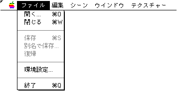
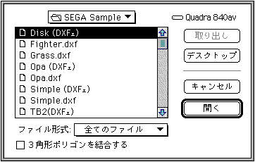
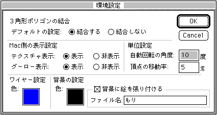

★Graphic Tools Guide
★3Dエディタユーザーズマニュアル
★Graphic Tools Guide
★3Dエディタユーザーズマニュアル
▲
戻る｜
進む▼
3Dエディタユーザーズマニュアル/2.使用方法
■ファイルメニュー

●開く
- ファイル形式指定ポップアップメニュー付きのオープンダイアログを表示します。
ファイル形式ポップアップメニューによって指定されているファイルをリストに表示します。
また、『３角形ポリゴンを結合する』のチェックボックスをチェックすることによって、
読み込み時に近似する３角形ポリゴンを結合させることが出来ます。
その他の機能は通常のアプリケーションのオープンメニューと同様です。

●閉じる
- 開いているウインドウを閉じます。（ウインドウのクローズボックスも同様の動きをします。）
ファイルに変更があった場合、保存するか、そのまま捨てるか聞いてきますので、保存する場合は、
『保存』ボタンをクリックしてください。『保存』と同じ動作を行います。
（複数のウインドウを表示している場合には、最後のウインドウを閉じる時や、
コマンドキー（�）とオプションキー(option)を同時に押した時、終了する時に、この動作をします）
●保存
- 開いているウインドウに変更があった場合、その内容で保存し直します（ファイルの上書きです。
変換は行いません）。
●別名で保存
- ファイル形式指定ポップアップメニュー付きの保存ダイアログを表示します。
ファイル形式ポップアップメニューによってファイルのフォーマットを指定してください。
元のファイルと異なるファイル形式が指定された場合には変換して保存します。
●復帰
- 保存されている内容に戻します。
●環境設定
- 下記のダイアログを表示します。各設定を行ってください。

- ◆３角形ポリゴンの結合
- ファイルオープンダイアログの『３角形ポリゴンの結合』チェックボックスのデフォルトの設定を行います。
このチェックボックスは見落としがちなため、デフォルトで好みの設定にしておくと便利です。
- ◆Mac側の表示設定
-
- テクスチャ表示
- 「表示」に設定されている場合、マテリアルにテクスチャを張り付けたときにTV画面に近い画像がMac上に表示されます。
- グーロー表示
- 「表示」に設定されている場合、グーローシェーディングを指定したときにTV画面に近い画像がMac上に表示されます。
編集中に快適な動作を得たい場合には、「非表示」に設定してください。
- ◆単位設定
-
- 自動回転の角度
- ツールパレットの以下の各ツールで、３Dイメージを自動回転させる角度を設定します。
| Y軸自動回転ツール | |
| X軸自動回転ツール | |
| Z軸自動回転ツール | |
- 頂点の移動率
- 頂点データ変更機能の移動率を設定します。
- ◆ワイヤー設定
-
- 色
- ワイヤーフレーム色を設定します。
- ◆背景の設定
-
- 色
- 背景色を設定します。
- 背景に絵を張り付ける
- 背景に張り付ける画像データを設定します。
●終了
- アプリケーションを終了します。変更されたファイルが開いている場合には保存するかどうかのダイアログが表示されます。
▲
戻る｜
進む▼
★Graphic Tools Guide
★3Dエディタユーザーズマニュアル
Copyright SEGA ENTERPRISES, LTD., 1997